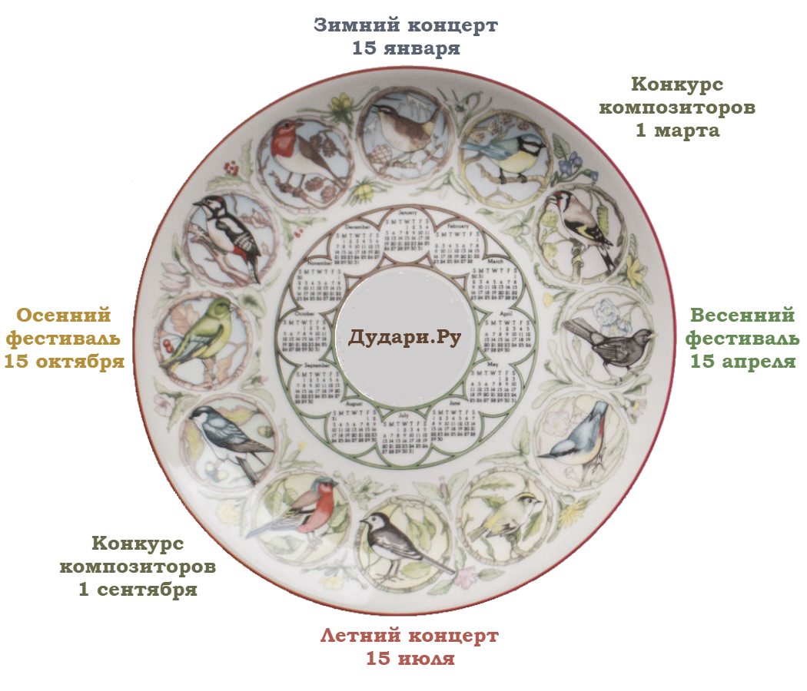

Известно, что самостоятельное обучение на музыкальных инструментах, в отличии от обучения в музыкальной школе, затруднено прежде всего отсутствием постоянной мотивации и контроля со стороны учителя. В музыкальных школах проводятся экзамены и концерты, где ученики показывают свои достижения и слушают игру своих товарищей. Только одной эмоциональной реакцией на игру, учащиеся уже дают оценку работам друг друга. В то же время люди, обучающиеся самостоятельно, пусть даже с консультациями у частного учителя, как правило, лишены этой важной составляющей в обучении - возможности показать свои достижения другим людям с такими же интересами и узнать их отзыв.
Предоставить возможность музыкантам-любителям на духовых музыкальных инструментах выкладывать свои аудио и видео записи для показа и обсуждения в формате онлайн конкурсов и концертов.

Сроки сдачи записей, указанные в календаре, могут быть немного сдвинуты вперед. Также между сроком сдачи обязательной и свободной программы фестивалей есть промежуток в 2 недели
Это конкурс, который проводится два раза в год весной и осенью. Состоит из обязательной и свободной программы.
Обязятельные произведения подбираются организатором конкурса в двух стилях: классика и джаз.
Участникам необходимо выбрать одно из двух обязательных произведений, сделать запись или видео своей игры,
выложить файл с записью в какой-либо файлообменник (www.box.com, cloud.mail.ru)
и прислать ссылки на записи в разделе заявок на участие. В свободной программе можно записать любое одно произведение по своему выбору.
На сайте организовано голосование, в котором могут принять участие зарегистрированные пользователи сайта,
и есть также возможность оставить отзыв о своих впечатлениях.
Результаты голосования пересчитываются в лавровые листочки, которые накапливаются с каждым участием и затем конвертируются в лавровые венки.
Похож на фестиваль, но он - совсем не конкурс. Вы можете подготовить на духовом инструменте записи любых произведений в любом количестве и прислать на них ссылки до установленной даты концерта. Все присланные записи будут доступны для прослушивания в день начала концерта, и в тот же день откроется обсуждение (без голосования). Также проводится 2 раза в год, только летом и зимой.
Это композиторская игра - нужно придумывать музыку на обязательную заданную последовательность нот. Затем проводится голосование, которое определяет. чей вариант удачнее. Победитель придумывает следующую обязательную последовательность.